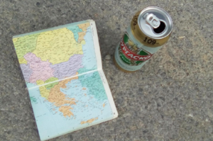
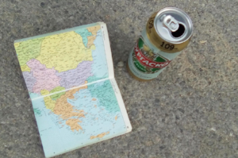
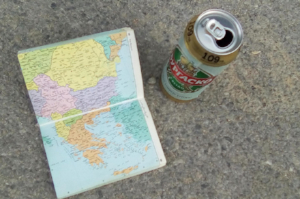

Notes


 


'Por un mundo donde seamos socialmente iguales, humanamente diferentes y totalmente libres'. (Rosa Luxemburg)
El contenido de este blog, las fotos, videos, mapas, gráficos y textos están elaborados por mi -salvo que mencione lo contrario- y publicado bajo una licencia Creative Commons - Atribución - Compartir Igual 4.0 Internacional (CC BY-SA 4.0). El sitio lo elaboré utilizando el software libre R y el tema de Hugo ‘Artists’. Las fotos las alojé en Flickr y los videos en Vimeo. Utilizo un lenguaje no sexista porque lo que no se nombra no existe -incluyo una ‘x’ siempre que sea necesario-.
